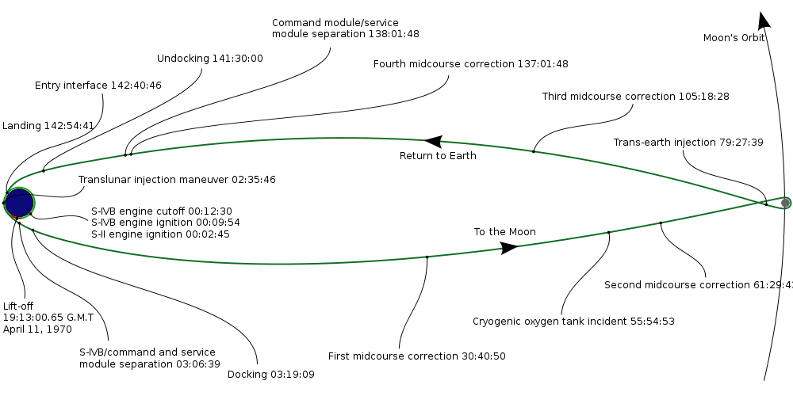

Adam Savitzky is the product manager for {Julia} Studio at Forio Online Simulations.
Julia is an open source programming language for technical computing. Julia has a powerful syntax for math and matrices, with the speed of C++
Forio offers a platform for building and sharing simulations online. Forio has worked with major organizations to develop simulations and predictive analytics tools for higher education, public policy, corporate training, and business analytics.
We are power Matlab users. Some of us are Lisp hackers. Some are Pythonistas, others Rubyists, still others Perl hackers... We’ve generated more R plots than any sane person should. We are greedy: we want more.... About two and a half years ago, we set out to create the language of our greed — the language we’ve created is called Julia.
- Jeff Bezanson, Stefan Karpinski, Viral Shah, Alan Edelman Why We Created Julia, Feb. 2012
Approaches the performance of C++ on most benchmarks
| Julia 12b1d5a7 |
Python 2.7.3 |
Matlab R2011a |
R 2.14.2 |
|
|---|---|---|---|---|
| fib | 1.97 | 46.03 | 1587.03 | 275.63 |
| parse_int | 1.72 | 25.29 | 846.67 | 353.48 |
| quicksort | 1.37 | 69.20 | 133.46 | 708.76 |
| mandel | 1.45 | 34.88 | 74.61 | 184.71 |
| pi_sum | 1.00 | 33.64 | 1.46 | 253.45 |
| rand_mat_stat | 1.95 | 29.01 | 7.71 | 12.66 |
| rand_mat_mul | 1.00 | 1.75 | 1.08 | 9.58 |
Write elegent mathematical programs in a fraction of the time without sacrificing performance. Julia supports arrays as first class objects, so you can do matrix manipulation in one line of code while approaching the speed of C++.
Have a really big problem? Julia is purpose-built to support parallel computing. Spin up the EC2 instances you need and instruct Julia to use more processers. It's as simple as that.
Julia is open source. If something is missing, you can contribute to the language.
{Julia} Studio is the first and only IDE for Julia. The best way to get started with Julia is to download and install {Julia} Studio: forio.com/julia.
Let's try linear regression.
Samples of gasoline, where we analyze the compent makeup from three different components, and compare it to octane rating
| Component 1 (%) | Component 2 (%) | Component 3 (%) | Octane Rating | ||
|---|---|---|---|---|---|
| * data taken from Helmuth Spaeth, Mathematical Algorithms for Linear Regression. Academic Press, 1991. | |||||
| 53.33 | 1.72 | 54 | 92.19 | ||
| 59.13 | 1.2 | 53 | 92.74 | ||
| 57.39 | 1.42 | 55 | 91.88 | ||
| 56.43 | 1.78 | 55 | 92.8 | ||
Or, more generally:
Where:
data = csvread("gasoline.csv")
X = [data[:,2] data[:,3] data[:,4]]
y = data[:,6]
println(linreg(X, y))
| Error () | Component 1 () | Component 2 () | Component 3 () |
|---|---|---|---|
| 102.44000 | -0.09526 | -0.14831 | -0.08314 |
We're going to save the Apollo 13 astronauts!
Download the slides: http://goo.gl/2kNEI